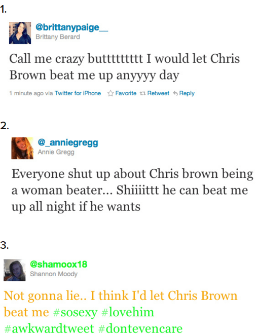
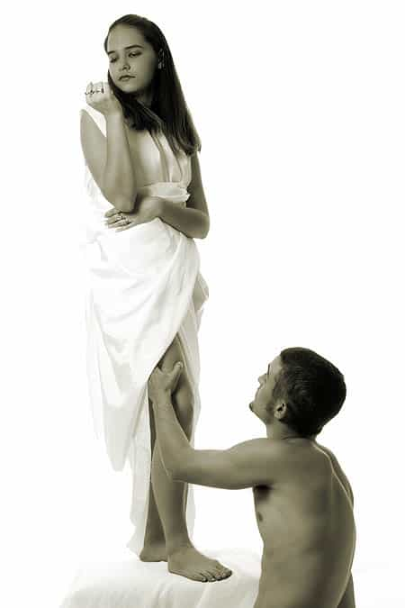

< < < Back
3 Reasons Women Stay With Abusive Men – Return Of Kings
Disclaimer: I am in no way, shape, or form, advising men to become physically abusive toward women. This article is simply pointing out a few reasons why females are drawn to abusive and violent men.
We’ve all heard stories about women who are in relationships with physically abusive men. During such conversations statements like “She must have low self esteem,” or “She must have some sort of mental illness” are the usual discussed reasons she doesn’t leave the relationship.
Granted, there may be some truth to those and other statements like them. But men who have a good understanding of the true nature of women know that in this day and age, it is that very nature combined with the degenerate feminist culture we’re currently entrenched in that contributes to their decision to stick around.
I’m going to give three reasons most women (and men for that matter) would never openly lend credence to.
3. It’s a turn on
Not surprised in the least
Women are aroused by violent men whether they admit it or not. It doesn’t matter if that violence is legal (boxing, MMA, etc) or if it’s turned onto them, men who trade in violence, domestic, professionally, or otherwise, moisten the panties of females.
Of course females would never say this out loud. A girl would never tell her friends “My physically abusive boyfriend scares the shit out of me but it turns me on” lest she make herself look bad and be subjected to a battery of questions and furtive glances.
But we here in the ‘sphere know the truth. Anyone who doubts this needn’t look any further than the case of Chris Brown. He’s the butt of plenty of jokes but his career hasn’t suffered. In fact, since he beat the shit out of Rihanna, his celebrity has increased exponentially as most of his fans are females.
Buzzfeed and Huffington Post both posted articles in the wake of what they described as “disturbing reactions” to Brown’s domestic abuse charges. They were just beside themselves with befuddlement as to why women would openly admit to being aroused by Brown’s violence toward women.
It should come as no surprise to anyone here the two reconciled at one point when Rihanna decided to “put the incident behind her.” But their torrid love affair is hardly the tip of the iceberg. Women have always been drawn to violent men. From women who fall for serial killers, to females who date, and even marry men behind bars this phenomenon is nothing new.
Girls can say whatever they want but their biology will always win out in the end.
2. Excitement
Put simply, women would rather be in an abusive relationship than a boring one.
When a female is in a boring relationship, it’s not long before she wants out. Women crave excitement, fun, and unpredictability. If they’re not getting it from their men, they’ll eventually find it somewhere else.
However, when a female is in a physically abusive relationship, there is very little boredom. No, there’s no fun in getting her ass beat, but the adrenaline rush that comes with the unpredictability of her lover’s volatile mood keeps her on her toes and for better or worse it keeps her around.

Battered women are never bored
My ex wife’s grandmother was married to an alcoholic who was extremely abusive. She told us plenty of stories about the late night shouting matches and beatings she took at his hands when he stumbled in at all hours of the night pissed off about this or that for little to no reason.
And at the end every story she told us about him she’d smile, shake her head, and with a slight chuckle say “never a dull moment with that one!” without fail. But what blew my socks off was when she told us she never stopped loving him even after he died.
Women might not always choose, or get the chance to choose between boredom and violence when it comes to their men. But you can bet your ass their southern regions would respond much more strongly to the latter.
1. Depedestalization

This ain’t happening in abusive relationships
Putting today’s woman on a pedestal is one of the quickest ways to move to the bottom of her totem pole of potential suitors. The reason for this is that females in this part of the world are worshiped from birth by males.
So when a man exhibits similar reverence in her presence it doesn’t arouse her because she’s quite literally desensitized to that kind of attention. She’s been getting it all her life and get it whenever she wants. It’s human nature to take something for granted if it’s readily available to us and male idolatry is no different.
Women in abusive relationships are well aware that their assailants don’t worship the ground they walk on. The moment he strikes her it becomes crystal clear he doesn’t give a damn about hurting her feelings and couldn’t care less about pissing her off.
Thanks to feminism, this utter disregard for her mental and physical well being is twisted into being viewed as a commodity by the warped and unhealthy female mind. She’ll never think to herself “my boyfriend hits me so this is a good thing and I will stay with him.” Subconsciously, however, she is drawn to him because he is unafraid to impose his will on her and violence is the end all, be all in that respect.
Conclusion
We all know that sluts are off limits when it comes to long term commitment. Abused women fall into that same category. Try all you want but short of beating the crap out of her you will never be as exciting, unpredictable, or as volatile as her past lovers.
There are plenty of women out there who are devoted to men who have never laid a hand on them. But the level of devotion that battered women have for their abusers is far beyond that of their untouched counterparts.
Read Next: Women In Their Prime Prefer Sex With Damaged Men


{kind=link}